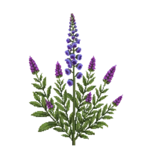

Purple Sage
Salvia leucophylla

Purple Sage is a shrub for mid-border, structure, suited to full sun and loam or sandy soil, flowering Mar, Apr, May, Jun.
| Type | Shrub |
|---|---|
| Mature height | 150 cm |
| Spread | 180 cm |
| Aspect | full sun |
| Foliage | Evergreen |
| Hardiness | USDA 8a-10b, RHS H4 |
| Pollinator-friendly | Yes |
| Pet-safe | Yes |
Where to use it in a border
At around 150 cm, it sits best toward the back of a border, or on its own as a focal point with room around it. Give it about 180 cm of room to spread. It is hardy across USDA zones 8a to 10b and rated H4 by the RHS, so check it suits your area before planting.
It appears in our lists of full sun, sandy soil, evergreen plants, pollinator-friendly plants, pet-safe plants.
Flowering through the year
Worth knowing
- Evergreen, so it keeps the border furnished through winter.
- Its flowers are valued by bees and other pollinators.
Good companions
Plants that share its conditions and style, chosen to complement its place in the border:
- Golden Currantas a partner at the same level
- Showy Penstemonas a partner at the same level
- St. Catherine's Laceas a partner at the same level
- Western Blue-eyed Grassto edge in front
- African lilyto edge in front
- African lily 'Northern Star'to edge in front
Garden styles
Coastal Mediterranean Modern Xeriscape (low-water)
See Purple Sage set in a full border, with spacing and companions worked out for your own conditions, in Border Builder.
Sources
Bloom timing and hardiness drawn from:
- Calscape CNPS (calscape.org, 2026-05)
- USDA PLANTS (plants.usda.gov, 2026-05)